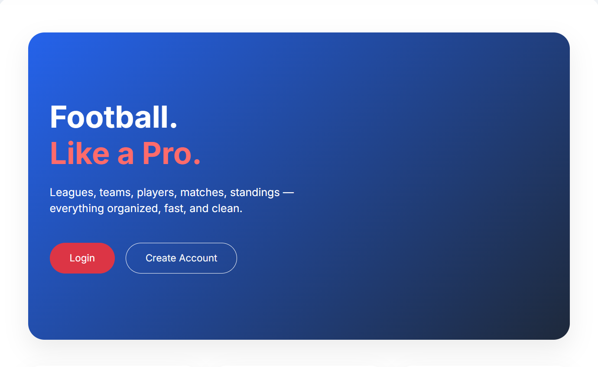
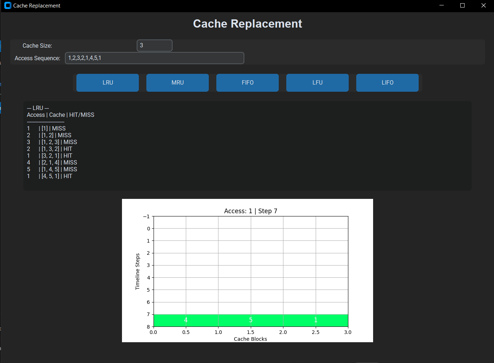
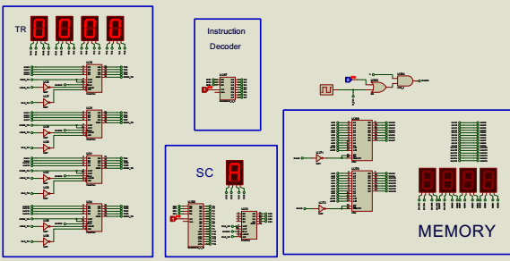

I specialize in solving SQL and data challenges efficiently and reliably.
I turn raw datasets into clear, actionable insights.

A relational database system for managing a full soccer league, built with PostgreSQL.
Tech: SQL, PostgreSQL
View on GitHub
An interactive Python tool that visually demonstrates five cache replacement algorithms: LRU, MRU, FIFO, LFU, and LIFO.
Tech: Python, OOP
View on GitHub
A fully functional 16-bit CPU built in Verilog based on the Mano computer architecture, simulated in Proteus.
Tech: Verilog, Proteus Design
View on GitHub
Open to freelance projects, collaborations, and data-related opportunities.
Let’s build something valuable.